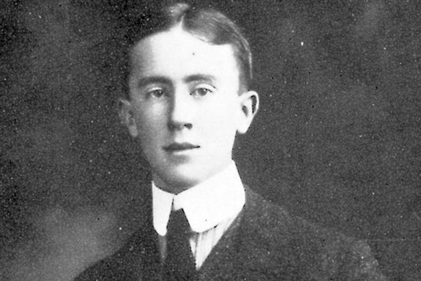

The childhood of Tolkien
John was born in what is now South-Africa in 1892.
His father Arthur Reuel Tolkien was a bank manager and his mother Mabel Suffield stayed at home to watch the kids.
When John was 3 years old His mother took him and his brother, who was 1 year old at the time, to England for a lengthy family visit which turned out to be a permanent one when his father died and is mother was left without any income and was forced to move back with her parents.
Altough John did not go to school, he was home taught by his mother, he could read fluently at the age of 4 and write fluently shortly after.
When John was 12 his mother died of diabetes which back then was lethal since insuline had not yet been invented.
After his mother died John came to live with a good friend of his mother, Francis Gavier Morgan.
Francis was an upper-class man who taught John everything about catholism.
In 1903 John won a scholarship at king Edwards school in Birmingham.
The early life of Tolkien

In 1911 Tolkien went on a holiday to Switzerland.
This holiday made a big impact on him.
Tolkien said that the journey of Bilbo across the Misty Mountains was directly based on his adventures as he had hiked fromInterlaken to Zermat which is about a 32 hour hike.
In that same year Tolkien began his study at Oxford university.
A year later he changed his course to "English language" and in 1915 he graduated with first-class honour.
When John was 16 he met his first love Edith Mary Bratt.
The gaurdian of John was not very pleased with their relationship because he felt like it hurted John's school carrier and therefore forbid John to talk to her.
After 3 years of not writing Edith, John asked her to marry him.
However in the three years of not writing she had accepted the proposal of someone else.
But John perservered and travelled across the country to meet Edith.
On january the 8th 1913 Edith accepted his proposal.
A year later Britain entered WOI.
Instead of volunteering like most young man did John enlisted in a program that delayed inlistment until he finished his degree.
Even tough John did not see himself as a soldier in 1915 after he finished his finals he was commisioned as a temporary lieutenant.
In 1916 John was summoned for posting to France.
Knowing the statistics at the time (12 young officers died every minute) he did not have much hope on coming back.
After a couple of battles John fel sick and was transported back to England.
Not long after almost his entire battailon was killed.
During his recovery in England he began writing his first attempt on mythology.
It was at this time that Edith bore their first child.
In 1918 John was deemed fit for the military again and was stationed in Hull where nothing happened until the end of the war.
In 1920 John left the military and started a new job at the Oxford English Dictionary.
The later life of Tolkien
In 1925 John started working at the Pembroke college.
During his time at the Pembroke college he wrote The hobbit and the first two of the Lordof the Rings books.
In 1929 John's fourth and final child was born. When the Second World War was on its way John was earmarked as a codebreaker.
He was educated on the matter and in 1939 he was asked to be a part of the national emergency code-break department.
He accepted the offer and started a course at the London HQ of Code and Cypher school.
But eventough he was marked as a good student in october 1939 he was informed that his services would not be required.
After the war, in which John did not have any military actions, Tolkien moved to Merton college where he remained to work until his retirement in 1959.
During his time at the Merton college he continued to write and fine tune his Lord of the Rings books until it was released in 1948.
After his retirement John gained increasingly more publicity and literary fame.
At first John was happy with his succes but as he became more popular he started to become increasingly more unhappy about it.
John and Edith eventually moved to Bournemouth which at the time was a seaside resort which was run over by the British upper class.
On the 29th of november 1971, after being married more than 50 years, Edith died.
In 1972 John was appointedby Queen Elizabeth II a commander of the order of the Britisch Empire.
In the same year he also got a Doctorate letter from the Oxford university.
On 2 september John Ronald Reuel Tolkien died of a chest infection at the age of 81.
He was burried in the same grave as his beloved wife Edith.
Work published
Throughout his life John wrote a lot of short stories and essays of which most were not published before his death.
After his death his children, mostly Christopher Tolkien, took it upon themselve to extend their fathers legacy and edit/publish his unfinished works.